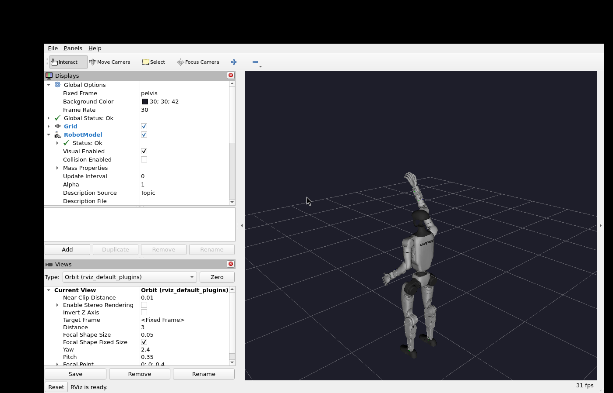
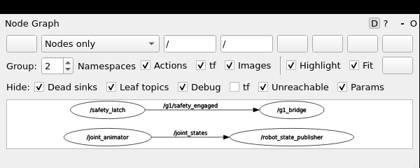
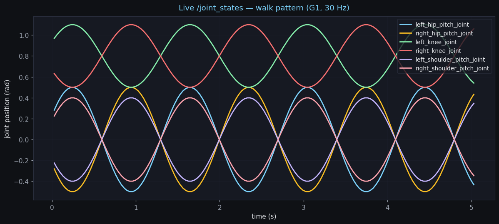
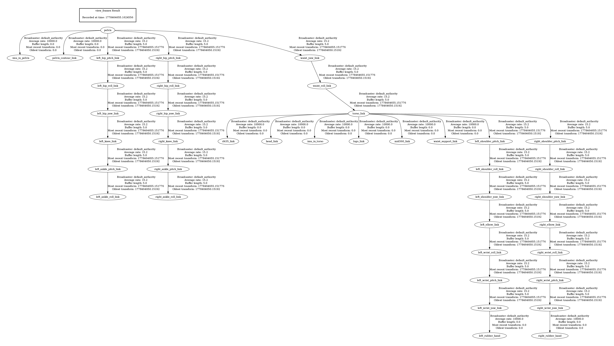
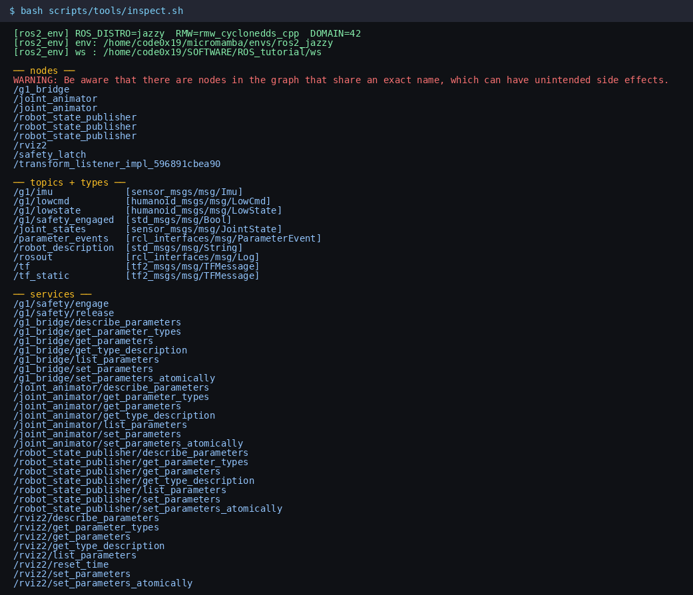

ROS 2 for Humanoids
From a one-node "hello" to a Unitree G1 that listens, talks, and moves. Nine lessons, one workspace, no Docker.
Tip: hover any code block to copy the whole thing, or hover a single line for a per-line copy — the $ prompt is stripped automatically. Press / to search the entire tutorial + reference docs.
ROS 2 in 10 minutes — every core concept, explained simply
A robot's nervous system, in plain language. Read this first; the rest of the tutorial assumes you've internalized these ideas.
The one-sentence definition
ROS 2 is the operating system for a robot's nervous system. It's not Linux — your robot already runs Linux. It's the layer above Linux that lets a dozen small programs (each watching one sensor, each driving one motor, each making one decision) talk to each other without knowing where each other lives, without crashing when one of them dies, and without needing a single "main" program.
Why "2"? The forty-second history
ROS 1 (2007–2025) had a master process — a phone book everyone called into. Lose the master, lose the robot. ROS 2 (2017–) replaced that with DDS, a peer-to-peer messaging standard borrowed from aerospace. Every node finds every other node by listening on the network. No central process. No single point of failure. That's the whole point of the rewrite.
The five concepts you actually need
① Node — a single small program
A node is one process that does one thing. The camera driver is a node. The motor controller is a node. The face detector is a node. A real robot runs dozens of nodes at once, each isolated, each replaceable.
Mental model: each node is a Linux process — htop sees it. Crash one node, the rest keep running.
② Topic — a public bulletin board
A topic is a named channel that any node can publish to and any node can subscribe to. Nobody addresses anyone directly. The camera publishes images to /camera/image; whoever cares — the face detector, the recorder, the dashboard — subscribes to that name. The camera doesn't know they exist.
You'll inspect topics constantly:
$ ros2 topic list # every topic right now $ ros2 topic echo /joint_states # watch messages flow $ ros2 topic hz /joint_states # at what rate? $ ros2 topic info /joint_states -v # who's publishing, what QoS?
Mental model: a Slack channel. People post; whoever's subscribed sees it. Posters and readers don't know each other.
③ Message — a typed letter
Topics carry messages, and every topic has exactly one message type. /camera/image carries sensor_msgs/Image. /cmd_vel carries geometry_msgs/Twist. The type is a contract: subscribers know what fields to expect.
$ ros2 topic type /joint_states # sensor_msgs/msg/JointState $ ros2 interface show sensor_msgs/msg/JointState Header header string[] name float64[] position float64[] velocity float64[] effort
Mental model: a typed envelope. Same channel name + same message type on both ends, or no mail is delivered.
④ Service — a phone call
A service is request/reply. Caller sends a request, blocks (or waits asynchronously), gets a single response. Use this for atomic state changes: "switch to damping mode," "reset the IMU bias," "start recording."
$ ros2 service list $ ros2 service call /g1/safety/engage std_srvs/srv/Trigger
Mental model: a phone call. Calling makes you wait until someone answers. Topics are voicemail blasts to a list.
⑤ Action — a long phone call with status updates
An action is like a service that takes time and reports progress. Caller sends a goal, server accepts (or rejects), feedback streams during execution, and a single result lands at the end. The caller can cancel at any point.
Motion commands are almost always actions: "walk to (1.5, 0)" takes seconds, the caller wants progress, and might want to stop the robot if a human walks in.
$ ros2 action list $ ros2 action send_goal /fibonacci example_interfaces/action/Fibonacci '{order: 6}' --feedback
Three smaller concepts you'll meet immediately
⚙ Parameters — runtime config knobs
Each node has a flat dict of named, typed parameters. Tune things at runtime, not in code:
$ ros2 param list /joint_animator $ ros2 param get /joint_animator pattern $ ros2 param set /joint_animator pattern walk
🧭 TF — a coordinate-frame graph
TF answers "where is X relative to Y?" for the whole robot. Each link (base, chest, head, left hand, camera, …) has a coordinate frame. TF stores every parent→child transform; you query the graph for any pair. Without TF, every node reinvents kinematics.
$ ros2 run tf2_ros tf2_echo base_link head_link
📡 QoS — quality-of-service for the data lane
Each pub/sub pair has a QoS profile: reliability (reliable / best-effort), durability (volatile / transient_local), depth (queue size), history. The profile must match on both ends or DDS routes nothing. Two profiles cover 95% of cases:
sensor_data— best-effort, volatile, depth 5. For state streams (IMU, joints, lidar). Drop is OK; latest matters.reliable + transient_local— for latches. A safety bit, a map, a robot description. Late subscribers still see the last value.
The big picture: how a "robot program" looks
┌──────────────┐ publishes /joint_states │ motor driver │ ───────────────────────┐ └──────────────┘ │ ▼ ┌──────────────┐ publishes /cmd_vel ┌──────────────┐ │ teleop │ ───────────────────▶ │ controller │ └──────────────┘ │ (subscribes)│ └──────┬───────┘ ┌──────────────┐ service /set_mode │ │ GUI / shell │ ◀───────────────────────────┤ └──────────────┘ ▼ publishes /lowcmd
None of these nodes know about each other. They know names: topic /cmd_vel, service /set_mode. Anyone can write a replacement for any node as long as it speaks the same topics. That's why ROS 2 is composable instead of monolithic.
The single command to remember
When you're confused — first day, hundredth day — type:
$ ros2 node list $ ros2 topic list $ ros2 topic info <topic> -v
The graph is the truth. If a node isn't there, it's not running. If a topic isn't there, no one is publishing to it. The CLI tells you what's true right now, regardless of what your code says it's doing.
Install & verify
The shortest path to a green ros2 doctor. Idempotent. Safe to re-run.
This tutorial targets Debian 13 (trixie) WSL2 + NVIDIA discrete GPU. ROS 2 doesn't ship apt packages for trixie, so we use RoboStack — the same ROS 2 binaries, packaged for conda-forge, work on any Linux.
The install scripts are discovery-first: they look for an existing micromamba and ROS env before downloading anything. If you already have ~/micromamba/envs/ros2_jazzy from another project, the install will reuse it and only add the small audio extras on top.
$ bash install/install.sh # the script will print, in order: # [01_micromamba] found micromamba: ~/.local/bin/micromamba # [02_robostack] found working ROS 2 env: ~/micromamba/envs/ros2_jazzy # [03_pip_layer] installing pip extras: sounddevice, onnxruntime, … # [04_unitree_sdk] unitree_sdk2py present (v?) # [05_verify] install verified.
Once that's green, activate the env in your shell:
$ source scripts/ros2_env.sh [ros2_env] ROS_DISTRO=jazzy RMW=rmw_cyclonedds_cpp DOMAIN=42 [ros2_env] env: /home/you/micromamba/envs/ros2_jazzy [ros2_env] ws : /home/you/SOFTWARE/ROS_tutorial/ws
Then build the workspace:
$ cd ws $ colcon build # 30 seconds to 2 minutes depending on what changed $ source install/setup.bash $ ros2 pkg list | grep -E 'tutorial_|g1_|humanoid' g1_bridge g1_controller g1_speech humanoid_msgs tutorial_actions tutorial_basics tutorial_lifecycle tutorial_pubsub tutorial_services tutorial_tf
bash scripts/doctor.sh dumps everything in one place — Python version, ROS distro, env packages, network interfaces, GPU presence — and writes a timestamped report you can paste into a bug report.
Bring up the Unitree G1 in rviz2 — your first ROS 2 robot
The actual Unitree G1 URDF — 41 links, 165 STL meshes, 29 driven joints. Topics, services, and parameters all visible at once. Drive it before you write a line of code.
The package tutorial_sim brings up the real Unitree G1 URDF (vendored from unitreerobotics/unitree_ros — same model used in mujoco_ros and the official ROS 2 stack). Three nodes come up via one launch file:
robot_state_publisher— reads the URDF, republishes each link's transform on the TF tree given the current/joint_states.joint_animator— publishes/joint_statesat 30 Hz, driving all 29 G1 joints through one of six patterns (wave,walk,squat,tpose,stretch,zero).rviz2— preconfigured to show the RobotModel + TF + world grid.
Bring it up
$ bash scripts/tools/sim_up.sh # default: wave $ bash scripts/tools/sim_up.sh walk # walking gait $ bash scripts/tools/sim_up.sh squat # squat cycle $ bash scripts/tools/sim_up.sh tpose # T-pose $ bash scripts/tools/sim_up.sh stretch # full-body rotation $ bash scripts/tools/sim_up.sh wave false # headless (no rviz window)
If the G1 assets aren't fetched yet, sim_up.sh prints the two commands you need to run first (install/06_fetch_g1_assets.sh + ros2_build.sh g1_description). scripts/deploy_and_test.sh auto-fetches them.
The five patterns, side by side

What just happened — every concept from the intro, live
In a second shell, see the system you just stood up:
$ source scripts/ros2_env.sh $ ros2 node list /joint_animator /robot_state_publisher /rviz2 $ ros2 topic list -t /joint_states sensor_msgs/msg/JointState /robot_description std_msgs/msg/String /tf tf2_msgs/msg/TFMessage /tf_static tf2_msgs/msg/TFMessage
Watch the joint stream — all 29 G1 joints in one message:
$ ros2 topic echo /joint_states --once
header: { stamp: { sec: 1778449045 } }
name:
- left_hip_pitch_joint
- left_hip_roll_joint
- left_hip_yaw_joint
- left_knee_joint
- left_ankle_pitch_joint
- left_ankle_roll_joint
- right_hip_pitch_joint
… (29 joints total)
- right_wrist_yaw_joint
position: [0.0, 0.0, 0.0, 0.0, 0.0, 0.0, 0.0, …]
$ ros2 topic hz /joint_states average rate: 30.000 # exactly the publisher rate
Publish to /joint_states directly — hold an arbitrary pose by hand:
$ ros2 topic pub --once /joint_states sensor_msgs/msg/JointState \ '{name: ["left_shoulder_pitch_joint","right_shoulder_pitch_joint"], position: [-1.5, -1.5]}' # the robot snaps to arms-overhead, then the animator overrides on the next tick
Switch the animation pattern at runtime — exercise ros2 param
$ ros2 param list /joint_animator pattern rate_hz use_sim_time $ ros2 param get /joint_animator pattern String value is: wave $ ros2 param set /joint_animator pattern walk Set parameter successful # rviz transitions to a walking gait — no restart needed $ ros2 param set /joint_animator pattern squat $ ros2 param set /joint_animator pattern stretch $ ros2 param set /joint_animator pattern zero # zero = URDF natural standing pose (every joint at 0)
Query the G1's kinematics — exercise tf2
$ ros2 run tf2_ros tf2_echo pelvis head_link - Translation: [0.000, 0.000, 0.450] - Rotation: in Quaternion (xyzw) [0.000, 0.000, 0.000, 1.000] $ ros2 run tf2_ros tf2_echo pelvis left_wrist_yaw_link # the wrist pose updates as the animation runs. $ ros2 run tf2_tools view_frames # produces frames.pdf showing every parent→child link in the tree (41 links)
Drive a Twist topic — exercise the cmd_vel contract
The twist_listener entry point in tutorial_sim subscribes to /cmd_vel and prints what it sees. Pair it with teleop_twist_keyboard for the canonical "drive a robot from the keyboard" pattern:
$ ros2 run tutorial_sim twist_listener [INFO] listening to /cmd_vel — try teleop_twist_keyboard to drive $ # in another shell: $ ros2 run teleop_twist_keyboard teleop_twist_keyboard # press i, j, k, l — the listener prints arrows showing direction: [INFO] vx=+0.50 m/s →→→→→→→→→→ wz=+0.00 rad/s [INFO] vx=+0.50 m/s →→→→→→→→→→ wz=+1.00 rad/s ⟳⟳⟳⟳⟳
/joint_states does.
What's actually under the hood
The G1 URDF lives at ws/src/g1_description/g1_29dof.urdf (vendored from upstream by install/06_fetch_g1_assets.sh). The launch file (ws/src/tutorial_sim/launch/g1_sim.launch.py) does three things before passing the URDF to robot_state_publisher:
- rewrites every relative
<mesh filename="meshes/X.STL"/>topackage://g1_description/meshes/X.STLso rviz2 can resolve them via ament; - wraps the resulting XML in
ParameterValue(value_type=str)(Jazzy launch quirk); - activates the rviz preset at
ws/src/tutorial_sim/rviz/g1.rvizwithpelvisas the fixed frame.
/joint_states.The animator publishes positions for all 29 G1 joints: the six driven ones (shoulder pitch, elbow, hip pitch — each side) and the other 23 (knees, ankles, wrists, waist, shoulder roll/yaw, hip roll/yaw) held at 0.0. Without publishing the full set, the unspecified joints leave gaps in the TF tree and the body looks collapsed.
Stop everything
Ctrl+C in the launch shell. ros2 node list goes empty. No daemons left running.
A minimal node — what ros2 run actually runs
ROS 2 isn't a framework you import into main(). It's a runtime you join.
The smallest useful ROS 2 program is a class that extends rclpy.node.Node, a main() that calls rclpy.init(), and a try/finally that cleans up. Skipping the cleanup leaks a DDS participant — the robot will discover it again on the next launch and your topic graph fills with ghosts.
import rclpy from rclpy.node import Node class Hello(Node): def __init__(self): super().__init__("hello") self.declare_parameter("period_s", 1.0) period = float(self.get_parameter("period_s").value) self._count = 0 self._timer = self.create_timer(period, self._tick) def _tick(self): self._count += 1 self.get_logger().info(f"hello (tick {self._count})") def main(args=None): rclpy.init(args=args) node = Hello() try: rclpy.spin(node) except KeyboardInterrupt: pass finally: node.destroy_node() rclpy.shutdown()
Run it:
$ ros2 run tutorial_basics hello [INFO] node up — name=hello period=1.0s [INFO] hello, humanoid (tick 1) [INFO] hello, humanoid (tick 2) ^C [INFO] interrupted — shutting down cleanly
Then verify it really is on the topic graph:
$ ros2 node list /hello $ ros2 node info /hello # shows Subscribers, Publishers, Service Servers, …
ROS_DOMAIN_ID=42 can see /hello. The Unitree G1 also speaks CycloneDDS — the same runtime you're using here is what talks to the robot in lesson 07.
Pub/sub + QoS — why best_effort is the default for robots
A 500 Hz IMU on reliable QoS saturates the network. Pick the right profile or lose the message that mattered.
The talker publishes a sensor_msgs/JointState at 50 Hz with the sensor_data QoS profile: best-effort, volatile, depth 5. A dropped sample is not retransmitted — the next one is already on the way.
from rclpy.qos import qos_profile_sensor_data from sensor_msgs.msg import JointState self._pub = self.create_publisher( JointState, "/joint_state", qos_profile_sensor_data)
The listener uses the matching QoS:
self._sub = self.create_subscription(
JointState, "/joint_state", self._on_state, qos_profile_sensor_data)
Bring up both in two shells:
$ ros2 run tutorial_pubsub talker [INFO] publishing /joint_state @ 50.0 Hz, QoS=sensor_data $ ros2 run tutorial_pubsub listener [INFO] subscribed to /joint_state with sensor_data QoS [INFO] rx# 1 pos=[+0.000, +0.000, +0.500, -0.500] [INFO] rx# 26 pos=[+0.499, -0.499, +0.026, -0.026]
And inspect what the network actually carries:
$ ros2 topic hz /joint_state average rate: 50.000 $ ros2 topic info /joint_state -v Type: sensor_msgs/msg/JointState Publisher count: 1 QoS profile: Reliability: BEST_EFFORT Durability: VOLATILE Depth: 5
ros2 topic info -v when a subscription seems dead.
Services — the right shape for rare, atomic state changes
Topics are for streams. Services are for "go to damping mode, yes or no?"
The posture server exposes two std_srvs/Trigger services — the simplest possible service type: no request fields, a bool success and string message reply. That's enough for most posture transitions when the intent is the whole request.
from std_srvs.srv import Trigger self._sit = self.create_service( Trigger, "/posture/sit", self._on_sit) def _on_sit(self, req, resp): self._think() if self._coinflip(): resp.success = True resp.message = "sitting" else: resp.success = False resp.message = "controller refused — IMU bias too high" return resp
Two ways to call it:
# quick-and-dirty from the CLI: $ ros2 service call /posture/sit std_srvs/srv/Trigger response: std_srvs.srv.Trigger_Response(success=True, message='sitting') # from the lesson's client (handles timeout + reachability): $ ros2 run tutorial_services client sit [INFO] sit: OK — sitting
Why a custom client? Because robot code can't accept "service unreachable" as a silent failure mode. The CLI papers over that; the client doesn't:
def call(self, timeout_s=2.0): if not self._client.wait_for_service(timeout_sec=timeout_s): return False, f"service /posture/{self._posture} unreachable" future = self._client.call_async(Trigger.Request()) rclpy.spin_until_future_complete(self, future, timeout_sec=timeout_s) if not future.done(): return False, "service call timed out" return future.result().success, future.result().message
Actions — long-running goals with feedback and cancel
The right shape for motion. A walk-to-pose is an action, not a service.
An action has four moving parts:
- Goal — what to achieve ("walk to (1.5, 0)").
- Feedback — published while running ("at (0.8, 0), 0.7 m to go").
- Result — published once, when finished ("arrived").
- Cancel — the caller can withdraw mid-flight; the server stops safely.
We use example_interfaces/Fibonacci here as the shape-only demo — the same pattern drives the G1 walk_to_pose action in lesson 09.
from rclpy.action import ActionServer, CancelResponse, GoalResponse from example_interfaces.action import Fibonacci self._action = ActionServer( self, Fibonacci, "/fibonacci", execute_callback=self._execute, goal_callback=self._on_goal, cancel_callback=self._on_cancel) def _execute(self, goal_handle): feedback = Fibonacci.Feedback() feedback.sequence = [0, 1] for i in range(2, goal_handle.request.order + 1): if goal_handle.is_cancel_requested: goal_handle.canceled() return Fibonacci.Result() feedback.sequence.append( feedback.sequence[i-1] + feedback.sequence[i-2]) goal_handle.publish_feedback(feedback) time.sleep(0.5) goal_handle.succeed() result = Fibonacci.Result() result.sequence = feedback.sequence return result
Drive it from the CLI:
$ ros2 action send_goal /fibonacci example_interfaces/action/Fibonacci \ '{order: 10}' --feedback Sending goal: order: 10 Goal accepted with ID: … Feedback: sequence: [0, 1, 1] Feedback: sequence: [0, 1, 1, 2] … Result: sequence: [0, 1, 1, 2, 3, 5, 8, 13, 21, 34, 55]
- Topic for continuous streams (joint state, IMU).
- Service for atomic state changes that complete quickly.
- Action for goals that take time and might be canceled.
/g1/lowstate on a topic and accepts walk goals via an action.
Lifecycle nodes — the right pattern for anything safety-critical
A vanilla node is always on. A managed node says yes only when the operator says yes.
Lifecycle nodes give you a state machine: unconfigured → inactive → active → inactive → finalized. Each transition is a hook (on_configure, on_activate, etc.) where you control what happens. Subscribers and timers stay registered across active ↔ inactive; publishers stay alive but stop sending in inactive.
from rclpy.lifecycle import LifecycleNode, TransitionCallbackReturn class LifecycleTalker(LifecycleNode): def on_configure(self, state): self._pub = self.create_lifecycle_publisher( String, "/lifecycle_heartbeat", 10) return TransitionCallbackReturn.SUCCESS def on_activate(self, state): self._timer = self.create_timer(1.0, self._tick) return super().on_activate(state) def on_deactivate(self, state): self.destroy_timer(self._timer) return super().on_deactivate(state)
Drive the state machine from a second shell:
$ ros2 run tutorial_lifecycle lifecycle_talker [INFO] node starts UNCONFIGURED $ # in another shell: $ ros2 lifecycle set /lifecycle_talker configure Transitioning successful $ ros2 lifecycle set /lifecycle_talker activate Transitioning successful $ ros2 topic echo /lifecycle_heartbeat # only now do messages flow
/g1/lowcmd publisher in configure, starts sending in activate, and goes silent on deactivate without tearing down the full node, so re-activation is fast.
TF2 — where is the head, relative to the floor, right now?
A coordinate-frame graph for the whole robot. Query at any time, any historical instant.
Without TF2, every node that needs "where is the head" ends up subscribing to /joint_state and doing its own kinematics — wrong, slow, drifts. With TF2 you publish each parent→child transform once (static) or per cycle (dynamic), and anyone can ask:
$ ros2 run tf2_ros tf2_echo base_link head_yaw_link
At time …
- Translation: [0.000, 0.000, 0.270]
- Rotation: in Quaternion [0.000, 0.000, 0.130, 0.991]
The lesson publishes one static transform (chest → head, 0.27 m up) and one dynamic transform (head → head_yaw, sine-wave yaw):
from tf2_ros.static_transform_broadcaster import StaticTransformBroadcaster from geometry_msgs.msg import TransformStamped tf = TransformStamped() tf.header.stamp = self.get_clock().now().to_msg() tf.header.frame_id = "base_link" tf.child_frame_id = "head_link" tf.transform.translation.z = 0.27 tf.transform.rotation.w = 1.0 self._tf.sendTransform(tf)
header.stamp on every publish. If you copy a TransformStamped and re-publish it without updating the timestamp, the TF buffer rejects it as stale and tf2_echo returns nothing. Fresh stamp every cycle.
The roboticist's toolkit — every CLI & rqt tool, demoed
What an experienced ROS 2 user types ten times a day. Bring up scripts/tools/sim_up.sh in another shell, then walk this page.
You've already met the headline tools. This section is the full roster, in the order you'd reach for them when something is wrong (or right) with a live system. Every example below assumes the sim humanoid is running (bash scripts/tools/sim_up.sh) so you can copy-paste and see real output.
The graph: who is running, and who is talking to whom
ros2 node list / info
Names of every running node; per-node topics, services, actions, parameters.
$ ros2 node list $ ros2 node info /joint_animator
ros2 topic list / type / info -v
Names + types of every topic; per-topic publisher count and QoS profile.
$ ros2 topic list -t $ ros2 topic info /joint_states -v
ros2 topic echo / hz / bw
Stream messages, measure publish rate, measure bandwidth.
$ ros2 topic echo /joint_states $ ros2 topic hz /joint_states $ ros2 topic bw /tf
ros2 topic pub
Publish a message from the CLI — bypass any other node.
$ ros2 topic pub --rate 10 /cmd_vel \ geometry_msgs/msg/Twist '{linear: {x: 0.5}}'
ros2 service list / call / type
Every advertised service; invoke one; inspect its request/response shape.
$ ros2 service list $ ros2 service type /g1/safety/engage $ ros2 service call /g1/safety/engage std_srvs/srv/Trigger
ros2 action list / send_goal / info
Every action; send a goal with feedback; inspect server.
$ ros2 action list -t $ ros2 action send_goal /fibonacci \ example_interfaces/action/Fibonacci \ '{order: 6}' --feedback
ros2 param list / get / set / dump / load
Tune nodes at runtime. Dump the full param dict to YAML, load it back.
$ ros2 param list $ ros2 param get /joint_animator pattern $ ros2 param set /joint_animator pattern walk $ ros2 param dump /joint_animator
ros2 interface show
Print the field shape of any msg / srv / action type, recursively.
$ ros2 interface show sensor_msgs/msg/Imu $ ros2 interface show humanoid_msgs/srv/SetMode
ros2 doctor
Sanity-check the env: domain ID, RMW implementation, network interfaces.
$ ros2 doctor $ ros2 doctor --report
Recording and replay — the second-most useful tool
ros2 bag records every message on every topic to a file. Replay it and the rest of the system can't tell the difference between the live robot and the recording. This is how you debug an incident: bag the failure, replay it back into the same node graph, watch what goes wrong.
The wrappers in scripts/tools/ handle the file naming so you don't think about it:
$ # record everything to bags/session_<timestamp> $ bash scripts/tools/bag_record.sh [INFO] Listening for topics... Press Ctrl-C to stop # … let the sim run for 10 seconds, then Ctrl+C … $ ls bags/ session_20260510_144202/ $ ros2 bag info bags/session_20260510_144202 Files: session_20260510_144202_0.mcap Bag size: 48.1 KiB Storage id: mcap ROS Distro: jazzy Duration: 9.612s Messages: 412 Topic information: Topic: /joint_states | Type: sensor_msgs/msg/JointState | Count: 289 Topic: /tf | Type: tf2_msgs/msg/TFMessage | Count: 123 $ # stop the live sim — the bag is now the source of truth $ bash scripts/tools/bag_play.sh $ ros2 topic echo /joint_states # the wave session, replayed from disk
The rqt suite — GUI inspectors
rqt is the umbrella GUI; each "plugin" is one inspection tool. Two are essential:
rqt_graph — live topic graph
A box per node, an edge per topic. Best one-look diagnostic for "is the system wired up the way I think?"
$ bash scripts/tools/rqt_graph.sh # or: ros2 run rqt_graph rqt_graph
rqt_plot — live numeric plots
Pick any numeric topic field, watch it as a strip chart. Critical for tuning gains, watching state oscillation, debugging filters.
$ bash scripts/tools/rqt_plot.sh \ /joint_states/position[15]
rqt_console — log viewer
Filterable log stream from every node. Sort by severity, regex-match the message field.
$ ros2 run rqt_console rqt_console
rqt_topic / rqt_publisher / rqt_service_caller
GUI versions of topic echo, topic pub, and service call — useful when you can't remember the exact YAML for a message.
$ ros2 run rqt_gui rqt_gui # Plugins → Topics / Services / Publishers

safety_latch → /g1/safety_engaged → g1_bridge (the latched safety topic) and joint_animator → /joint_states → robot_state_publisher (the kinematic chain).
walk pattern, sampled at 30 Hz over 5 seconds. The hip pitches (left/right) are anti-phase, as are the shoulders (counter-swinging arms), and the knees flex once per gait cycle. rqt_plot draws this same chart inside Qt; the rendering you see here is from the equivalent matplotlib consumer of /joint_states.The full TF tree, rendered to PDF
The single most useful diagnostic for "is my URDF right?" is tf2_tools view_frames — it walks the live TF graph and produces a PDF showing every parent→child link with the broadcaster, rate, and buffer state.
$ ros2 run tf2_tools view_frames # produces frames_<timestamp>.pdf in the current dir

pelvis. Walks down through the waist (yaw → roll → pitch) into torso_link, branches to head + both shoulders, and the leg branch goes hip → knee → ankle for each side. If a frame is missing from this graph, the corresponding link won't render in rviz2 — first place to look when "the body looks collapsed."One command for the live snapshot
The wrapper scripts/tools/inspect.sh bundles a "what is going on right now" report — every node, every topic + type, every service, every action, every parameter, plus rate samples for the top topics:
$ bash scripts/tools/inspect.sh

/g1/lowstate, /g1/lowcmd, /g1/safety_engaged all advertised; full parameter API exposed by every node.Type that whenever you walk into someone else's running system.
Cheat sheet — the verbs you'll actually use
| I want to… | Type |
|---|---|
| see what nodes are alive | ros2 node list |
| see all the topics being published | ros2 topic list -t |
| watch a topic's messages stream by | ros2 topic echo <topic> |
| check publish rate | ros2 topic hz <topic> |
| publish a one-off message | ros2 topic pub --once <topic> <type> <yaml> |
| call a service | ros2 service call <name> <type> <yaml> |
| send an action goal | ros2 action send_goal <name> <type> <yaml> --feedback |
| change a node's parameter | ros2 param set <node> <name> <value> |
| visualize the topic graph | ros2 run rqt_graph rqt_graph |
| inspect a TF transform | ros2 run tf2_ros tf2_echo <parent> <child> |
| record everything for replay | ros2 bag record -a -o <name> |
| replay a bag | ros2 bag play <name> |
| see why nothing is connecting | ros2 doctor --report |
That's most of what you do. Print this table, tape it to your monitor.
Going further with the G1 sim
Plot live joint angles, record + replay a session, pick alternate URDF flavours, and the next step up — Gazebo physics.
You already brought the G1 up in the first-robot section. This page demos the things you do after the robot is on the screen.
Plot a live joint angle
$ bash scripts/tools/rqt_plot.sh /joint_states/position[15] # index 15 = left_shoulder_pitch_joint — strip chart of the wave
Bag the run + replay it without the animator
$ bash scripts/tools/bag_record.sh /joint_states /tf /tf_static # Ctrl+C after 10 seconds — bags/session_<ts>/ written $ # stop the sim, then replay the bag into a fresh launch: $ bash scripts/tools/bag_play.sh $ ros2 topic hz /joint_states average rate: 30.000 # publisher is now ros2 bag, not the animator
Pick a different URDF flavour
The upstream g1_description ships several URDF variants — locked waist, 23-DOF, with hands, etc. Pass urdf:= to switch:
$ ros2 launch tutorial_sim g1_sim.launch.py urdf:=g1_29dof_lock_waist.urdf $ ros2 launch tutorial_sim g1_sim.launch.py urdf:=g1_29dof_with_hand.urdf $ ls ws/install/g1_description/share/g1_description/*.urdf # list all variants
Inspect the full kinematic tree
$ ros2 run tf2_ros tf2_echo pelvis left_wrist_yaw_link $ ros2 run tf2_ros tf2_echo pelvis right_ankle_roll_link $ ros2 run tf2_tools view_frames # produces frames.pdf — 41 links, 40 joints in the tree
One step further — Gazebo Sim physics (smoke test only)
The env ships the gz CLI core, but the sim subcommand (the actual physics engine) is a separate plugin. When it's missing, gz sim just prints its help text. Install it and run the canonical shapes scene:
$ ~/.local/bin/micromamba install -y -n ros2_jazzy \ -c conda-forge gz-harmonic $ gz sim --version $ gz sim shapes.sdf # click ▶ to step physics on three falling shapes
That's the smoke test. To put the G1 itself in physics, use MuJoCo — see "G1 in physics" below for why Unitree (and every other major humanoid vendor) ships official MuJoCo and Isaac Lab assets but no Gazebo wiring for their robots.
/joint_states changes (animator → DDS bridge → real motor encoders).
The G1 bridge — DDS ↔ ROS 2, with a safety latch in the middle
Two protocol stacks meet in one process. The bridge is the only place safety is enforced.
The Unitree G1 publishes its low-level state on the DDS topic rt/lowstate (type unitree_hg.msg.LowState_) and accepts commands on rt/lowcmd. The bridge translates each direction and gates the command path on /g1/safety_engaged.
The shape of the bridge:
class G1Bridge(Node): def __init__(self): super().__init__("g1_bridge") self._safety_engaged = False self._state_pub = self.create_publisher(LowState, "/g1/lowstate", qos_profile_sensor_data) self._imu_pub = self.create_publisher(Imu, "/g1/imu", qos_profile_sensor_data) self.create_subscription(LowCmd, "/g1/lowcmd", self._on_cmd, qos_profile_sensor_data) self.create_subscription(Bool, "/g1/safety_engaged", self._on_safety, LATCHED_QOS) self._sdk = G1Sdk(iface=iface) self._sdk.on_state(self._on_sdk_state) # republish DDS → ROS self._sdk.connect() def _on_cmd(self, msg): # **Structural** safety gate. Move this and you have a bug. if not self._safety_engaged: self.get_logger().warn("dropped /g1/lowcmd — safety disengaged") return self._sdk.publish_cmd(_to_sdk(msg))
Run it without a robot — the bridge has a built-in fake state emitter:
$ G1_BRIDGE_FAKE=1 ros2 run g1_bridge bridge [INFO] bridge up [FAKE] iface=<auto> — safety DISENGAGED $ # second shell: $ ros2 run g1_bridge safety [INFO] safety latch up (default: DISENGAGED) $ ros2 topic hz /g1/imu average rate: 50.000
Engage safety and watch the bridge stop dropping commands (in fake mode it has no real rt/lowcmd to forward, but it logs the change):
$ ros2 service call /g1/safety/engage std_srvs/srv/Trigger # bridge log: [WARN] safety latch → ENGAGED
Voice I/O — VAD-gated mic in, offline TTS out
Privacy by default. The G1 doesn't stream all audio to the network — only utterances.
Always-on audio is a privacy footgun and a bandwidth waste. The right shape is voice-activity-detected capture: a small model decides "this looks like speech," and only then does an utterance get published.
The listener uses Silero VAD (an ONNX model that runs on CPU at real-time) and publishes a base64-encoded WAV on /g1/speech/utter per detected utterance:
$ ros2 run g1_speech listen [INFO] listening (VAD-gated) # speak into the mic … [INFO] emit utterance (24320 bytes pcm)
The flow downstream of this is your choice — ASR, intent extraction, controller dispatch. We don't bake an ASR into the tutorial because the right one (Whisper? Vosk? cloud?) is a project-specific call.
For voice out we use Piper — offline TTS, runs on CPU faster than real-time, ships its own voice models. Exposed as a ROS 2 service:
One-time setup — download a Piper voice (~70 MB)
$ source scripts/ros2_env.sh $ mkdir -p ~/.cache/piper-voices $ python -m piper.download_voices en_US-lessac-medium \ --download-dir ~/.cache/piper-voices/
Bring the speaker up
$ ros2 run g1_speech speak
[INFO] speaker up (backend=piper)
If piper isn't installed or no voice is downloaded, the node falls back to a silent-WAV stub backend (still produces a file at /tmp/g1_speak_*.wav and logs the path — useful for headless smoke tests).
Make the G1 talk
In a second shell, call the service:
$ ros2 service call /g1/speech/say std_srvs/srv/Trigger
response:
std_srvs.srv.Trigger_Response(success=True, message="spoke 'Hello. I am the G1. How can I help?' (wav at /tmp/g1_speak_1778465829.wav)")
You'll hear the G1 speak through the default audio device. The same wav also lands at /tmp/g1_speak_<ts>.wav for offline inspection. Verify it really is audio (not stub silence):
$ python3 -c "import glob, wave, numpy as np; p=sorted(glob.glob('/tmp/g1_speak_*.wav'))[-1]; w=wave.open(p,'rb'); d=np.frombuffer(w.readframes(w.getnframes()), dtype=np.int16); print(f'{p}: duration={w.getnframes()/w.getframerate():.2f}s, std={d.std():.0f}')" # Expect: duration ≈ 2-3s, std ≈ a few thousand (real audio). # If std is 0, you got the silent-WAV stub — install piper-tts and re-run.
Customize the spoken text
The text parameter holds what gets spoken on the next service call:
$ ros2 param set /speaker text "Safety engaged. Ready for motion." $ ros2 service call /g1/speech/say std_srvs/srv/Trigger # Now the G1 says exactly that. $ ros2 param set /speaker voice "en_US-amy-medium" # Swap voices at runtime — download the new model the same way.
std_srvs/Trigger. A streaming TTS pipeline (long generation, cancellable) would be an action; the simple smoke-test path uses a service.
High-level control — everything composes
A lifecycle node that exposes a service-based /g1/set_mode, gated by safety, talking to the bridge.
The controller is the capstone. Every lesson before this contributes:
| Pattern | From lesson | Used here as |
|---|---|---|
| Managed lifecycle | 05 | refuses to publish before activate |
| Services | 03 | /g1/set_mode for posture switches |
| Actions | 04 | (in a richer build) walk_to_pose |
| Pub/sub QoS | 02 | /g1/lowstate sub, /g1/lowcmd pub |
| Safety latch | 07 | checked before every publish, on both sides |
The set-mode handler shows the composition explicitly:
def _on_set_mode(self, req, resp): if not self._safety_engaged: resp.success = False resp.message = "refused: safety_engaged=False" return resp # safety layer 1: controller-side latch check if self._cmd_pub is None: resp.success = False resp.message = "refused: controller not active" return resp # lifecycle gate (separate concern, not the safety latch) cmd = LowCmd() cmd.motor_cmd = [_damping_motor() for _ in range(29)] self._cmd_pub.publish(cmd) # safety layer 2: bridge re-checks the latch before forwarding resp.success = True return resp
Bring everything up:
$ G1_BRIDGE_FAKE=1 ros2 run g1_bridge bridge # shell A $ ros2 run g1_bridge safety # shell B $ ros2 run g1_controller demo # shell C $ # in shell D: $ ros2 lifecycle set /g1_controller configure $ ros2 lifecycle set /g1_controller activate $ ros2 service call /g1/safety/engage std_srvs/srv/Trigger $ ros2 run g1_controller wave_client [INFO] engaging safety … [INFO] requesting WAVE_HAND … [INFO] set_mode OK: published damping command toward WAVE_HAND
G1 in physics: watch it fall, then teach it not to
rviz draws the URDF, but nothing pulls it down. To get a G1 that can actually fall, run it under a physics simulator. MuJoCo is the cheapest path: the official G1 model is hardware-validated and runs on a laptop CPU.
The kinematic sim you've been driving so far ignores gravity, contacts, and inertia. Add physics and the same URDF turns into a 35 kg humanoid that collapses on the floor the moment you let go of the keyframe. That collapse is the starting point for every balancing controller ever written.
MuJoCo Menagerie — the 5-minute fall
Google DeepMind maintains mujoco_menagerie/unitree_g1, which ships g1.xml, g1_mjx.xml, and a scene.xml with stand and knees_bent keyframes. The MJX variant has been sim-to-real validated by Unitree.
$ pip install mujoco $ git clone --depth 1 https://github.com/google-deepmind/mujoco_menagerie ~/mj_menagerie $ python -m mujoco.viewer --mjcf=~/mj_menagerie/unitree_g1/scene.xml # Click "Pause", then drag the time slider forward. The G1 falls. # Load the "stand" keyframe from the Control panel and watch it collapse from upright.
That's the entire setup. No URDF rewrite, no <gazebo> tags, no transmission plumbing. The Unitree-published model includes inertias, contact pairs, and motor limits good enough that the falling pose matches a real G1 with the power cut.
Why this tutorial doesn't use Gazebo for the G1
Gazebo is the default ROS 2 simulator for mobile bases, arms, and sensor-rich scenes, and it stays the right choice when you need ros_gz_bridge, depth-camera plugins, lidar with realistic noise, or multi-robot worlds. For humanoid bipeds specifically, the field has moved on. Every major humanoid platform shipping in 2025–2026 publishes official sim assets for MuJoCo and/or Isaac Lab first, and leaves Gazebo to community ports if it exists at all:
| Platform | Official sim | Official Gazebo support? |
|---|---|---|
| Unitree G1, H1, H1-2 | MuJoCo + Isaac Lab | No — URDF is kinematic-only, no <gazebo> tags, no transmissions, no ros2_control YAML |
| Boston Dynamics Atlas | Proprietary + MuJoCo (community) | No (the DRC-era drcsim stack froze at ROS Kinetic) |
| Agility Cassie, Digit | MuJoCo + Isaac Lab | No |
| Booster T1, Fourier GR-1 / N1, Apptronik Apollo | MuJoCo (mujoco_menagerie) | No |
| ROBOTIS OP3 | Gazebo | Yes — the one mainstream humanoid still officially on Gazebo |
Two reasons drive the shift. First, contact dynamics: MuJoCo's soft-contact solver handles the stiff, fast, intermittent foot-to-floor regime more cleanly than DART or ODE (which is what Gazebo Harmonic ships). The SimBenchmark comparison and the 2023 contact-models survey both rank MuJoCo first for legged contact accuracy. Second, parallelism: Isaac Lab routinely trains a 29-DoF G1 across 4,096 parallel envs on a single GPU. Gazebo is CPU-bound and single-env, which is the wrong shape for the RL workflow that produced the current generation of humanoid policies.
For the G1 in particular, getting a passable Gazebo stand-still demo is days of work (write the <gazebo> blocks, transmissions, gz_ros2_control YAML, harden inertials for DART). A walking demo on top of that is weeks. If you want to spend that time, do — Gazebo's sensor plugins are still the cleanest ROS-2-native path if you need them. Otherwise the MuJoCo route above is the path of least resistance.
Isaac Lab is the third option, and the right one if you want to train a balancing policy with PPO at the parallel scale the field actually uses. unitree_sim_isaaclab ships ready-made G1 environments. NVIDIA's stated floor is 12 GB VRAM, which makes a 16 GB card workable for single-env work but tight for high-resolution sensors. Plan a day to install on a clean Ubuntu host; WSL2 fights the RTX renderer.
From "it falls" to "it balances"
Two open repos are the standard jumping-off point for a G1 balance controller:
- unitree_rl_mjlab — Isaac-Lab-style RL on top of MJX, G1 included. Trains a walking policy on one 4070-class GPU in roughly an hour. Best fit for a 16 GB rig.
- mujoco_playground — DeepMind's MJX environment zoo. G1, H1, Booster T1, Berkeley Humanoid, OP3, and dexterous hands.
pip install playgroundand you're training in minutes. - HoST (RSS 2025) — "G1 stand up from any prone posture." Closest open answer to "G1 push-recovery" today. Built on legged_gym / IsaacGym.
- unitree_rl_gym — the original IsaacGym repo with G1, H1, H1-2, Go2 walking. IsaacGym is deprecated, but the trained policies and the sim-to-real path are still useful references.
The deployment loop: train in unitree_rl_mjlab or mujoco_playground, export the policy as TorchScript, wrap it in an rclpy node that subscribes to /g1/lowstate and publishes /g1/lowcmd. Leave the safety latch engaged; if the policy ever produces NaN or saturates a joint, the latch is what keeps you from chasing the robot around the lab.
G1_BRIDGE_FAKE=1 with a CycloneDDS connection to the robot's 192.168.123.x interface and the same node graph drives a physical G1. The policy you trained in MuJoCo needs domain randomisation (motor latency, foot friction, mass perturbation) before it survives contact with the real ground.
What to build next
Concrete projects, grouped by what they teach. For each, the upstream repo to start from, the part you'd actually be writing yourself, and the realistic gotcha.
Tighten the bridge you already have
These are evening-sized projects on top of the existing g1_bridge and g1_controller. They make the system safer and more useful without adding new dependencies.
- Walk-to-pose action.
humanoid_msgs/WalkToPose.actionis already defined. Wireg1_controllerto send the SDK's high-levelrt/api/sport/requestand streamSportModeState_back as feedback. Reference: thesport_client.pyexamples in unitree_sdk2_python. - Gain ramping. The lesson sends one damping command. A real controller ramps
kpandkdwith a smoothstep over ~200 ms so the robot doesn't snap. Add it as a helper ing1_controller; the test is "no audible servo whine when entering STAND." - Watchdog. Auto-fall-back to damping if
/g1/lowstategoes stale (>100 ms). The G1 will literally fall if you stop publishinglowcmdin active mode — the watchdog is what protects you from a Python pause-the-world GC spike. - CRC validation.
LowState_carries a CRC the bridge currently ignores. Reject bad-CRC frames and surface them as a diagnostic. The CRC polynomial is in the SDK source. - Battery service. Publish
sensor_msgs/BatteryStatefromlowstate.power_v/power_aand a service that answers "is it safe to take a five-minute walk?" The G1 docs give the SOC curve.
Put the G1 in physics and train a controller
Covered in the section above: install MuJoCo Menagerie, drop the G1 in a scene, watch it fall. Then pick one of these as a starting point for a learned balancing or walking controller:
- unitree_rl_mjlab — Isaac-Lab-style RL on MJX, G1 included, fits a 16 GB GPU.
- mujoco_playground — DeepMind's MJX zoo (G1, H1, T1, Berkeley Humanoid, dexterous hands).
pip install playground. - HoST — "G1 stand up from any prone posture" (RSS 2025). The closest open analogue of push-recovery.
- GMR — retarget human MoCap to G1 joint angles. Useful for seeding a policy with motion priors.
- HumanoidVerse (CMU) — multi-simulator (IsaacGym, Genesis, Isaac Lab) scaffold with G1 12-DoF and 23-DoF envs.
Deployment loop: train in sim, export the policy as TorchScript, wrap it as a node that subscribes to /g1/lowstate and publishes /g1/lowcmd. The safety latch you already built is what catches the policy when it produces nonsense — leave it engaged.
Voice in, action out: language as a control channel
You have TTS (lesson 08). Add ASR and intent parsing and the loop closes:
- ASR. whisper.cpp runs on CPU and fits in ~500 MB for the
tiny.enmodel. Drop a node between a mic capture and a new/g1/speech/uttertopic. - Intent routing. A small
rclpynode that subscribes to/g1/speech/utterand maps strings to controller calls. Start with regex; graduate to a local LLM via ollama if you want fuzzier matching. The Qwen 2.5 3B model fits in 4 GB VRAM and answers fast enough for conversational latency. - MCP bridge. ros-mcp-server exposes ROS 2 topics and services as MCP tools, so any LLM client (Claude Desktop, Cursor, etc.) can drive the robot through the same safety-gated bridge.
Vision-Language-Action models on a single GPU
A Vision-Language-Action (VLA) model takes an image and a natural-language instruction and outputs joint targets. What you can actually run on a 16 GB GPU as of mid-2026:
| Model | Params | 16 GB inference? | Native fit for G1 |
|---|---|---|---|
| SmolVLA | 450 M | Comfortable | Tabletop arms, not humanoid |
| Octo-Base | 93 M | Trivial (<4 GB) | 7-DoF EEF deltas, manipulation |
| OpenVLA-7B | 7 B | Tight in bf16 (~16 GB); int4 fits ~7 GB | RT-X tokens, manipulation |
| π0 / π0-FAST | ~3 B | Yes (8 GB+ for inference) | Generic joint chunks; needs fine-tune for G1 |
| GR00T N1.5 / N1.7 | 2.2 B | Inference fits 16 GB (NVIDIA's stated floor) | Has a UNITREE_G1_SONIC embodiment head |
| RT-2 | 55 B | No — weights aren't public | — |
Wiring a VLA into ROS 2 looks like wiring any other model: a node loads the weights at startup, subscribes to /camera/image_raw + /joint_states + an instruction topic, and publishes JointTrajectory or JointState. Isaac-GR00T-ros2 shows the GR00T variant; fastvla shows it for arms with MoveIt.
Operator tooling
- Bag-driven regression tests. Record 30 s of a real bring-up, replay it into the bridge in a CI test, assert that the safety latch fires when expected.
tests/integration/full_e2e.shalready has the bag plumbing. - Mode-machine cross-check. The G1's onboard controller refuses some commands depending on
mode_machine. Have the bridge predicate every publish on the current mode and log refusals — that's a class of "why isn't it moving" bugs caught at the bridge instead of the controller.
None of these change the safety contract. Anything that asks you to bypass the latch (or move it from the bridge into the controller) is a regression — the gate sits at the boundary on purpose.